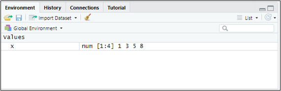

2 Almacenando y manipulando datos.

Figura 2.1. ¡Datos, datos!
2.1  Objetos. Datos.
Objetos. Datos.
Como vimos en el capítulo 1, R es interactivo: responde a las instrucciones que recibe, ya sea desde la consola o desde un script. Esas instrucciones actúan sobre objetos: estructuras o contenedores diseñados para almacenar datos y resultados. Los más importantes para nosotros son:
Vectores.
Data frames.
Factores.
Listas.
Los datos almacenados en los objetos pueden ser, básicamente, de tres tipos: números (numeric), cadenas de texto (character) o valores lógicos, verdadero o falso (logical).
Situémonos en el proyecto que creamos en el capítulo anterior (proyecto “explora”) y abramos un script nuevo para practicar.
2.1.1  Vectores.
Vectores.
Los vectores son conjuntos de elementos del mismo tipo. Definamos, por ejemplo, el vector x = (1,3,5,8). Para ello escribiremos en nuestro script:
x <- c(1,3,5,8)Ejecutamos la línea situando el cursor en cualquier punto de ella y pulsando a la vez las teclas Control + Enter (o haciendo clic en el botón Run del editor). Ya tenemos en memoria nuestro primer objeto. Conviene reparar en que acabamos de realizar una asignación: una flecha formada por los signos “<” y “-” traslada al vector llamado “x” los elementos 1, 3, 5 y 8, que hemos reunido con la función c() (de combinar).
Para ver su contenido basta con escribir el nombre del vector, “x”:
x## [1] 1 3 5 8Si además dirigimos la mirada a la ventana superior derecha de RStudio, comprobaremos que el Global Environment —la ventana que recoge los objetos que R mantiene en memoria— muestra nuestro vector:

Figura 2.2. Nuestro vector en memoria.
Un vector puede albergar también cadenas de texto, siempre entrecomilladas. Sirva de ejemplo el vector “genero” (¡evitemos las tildes al nombrar los objetos o podemos encontrarnos con problemas!):
genero <- c("Mujer","Hombre")
genero## [1] "Mujer" "Hombre"Cuando falta un dato en un vector, escribiremos “NA” (not available, no disponible). Por ejemplo, si no dispusiéramos del tercer dato del vector “Z”, lo definiríamos así:
Z <- c(1,2,NA,2,8)Para seleccionar un elemento concreto de un vector indicaremos, entre corchetes, la posición que ocupa. Así, para recuperar el tercer elemento del vector “x” haremos:
x[3]## [1] 5
2.1.2 Data frames.
Un data frame es la estructura con la que más trabajaremos: una tabla en la que las filas son los distintos casos (empresas, personas…) y las columnas, las variables. Cada columna es un vector, y todas tienen la misma longitud.
Construyamos, por ejemplo, el data frame “datos”, con tres variables —peso, altura y color de ojos, a las que llamaremos “Peso”, “Altura” y “Cl.ojos”— referidas a 3 personas. Definimos primero las tres variables como vectores y las reunimos después mediante la función data.frame():
Peso <- c(68,75,88)
Altura <- c(1.6,1.8,1.9)
Cl.ojos <- c("azules","marrones","marrones")
datos <- data.frame(Peso, Altura, Cl.ojos)
datos## Peso Altura Cl.ojos
## 1 68 1.6 azules
## 2 75 1.8 marrones
## 3 88 1.9 marronesPara referirnos a una variable concreta de un data frame escribiremos el nombre del data frame, el símbolo $ y el nombre de la variable:
datos$Peso## [1] 68 75 88Y para conocer el número de filas (casos) y de columnas (variables), las funciones nrow() y ncol():
nrow(datos)## [1] 3
ncol(datos)## [1] 3
2.1.3 Factores.
En R, un factor es un tipo especial de objeto destinado a representar datos categóricos o atributos: datos que no son magnitudes, sino que pertenecen a un conjunto limitado de categorías, también llamadas niveles. Pensemos en la variable “Cl.ojos”: para R es, por ahora, un simple vector de texto. Para convertirla en un factor:
Cl.ojosF <- factor(Cl.ojos)
Cl.ojosF## [1] azules marrones marrones
## Levels: azules marrones“Cl.ojosF” es algo más que un vector de texto: es una variable cuyos elementos solo pueden adoptar dos valores categóricos, los niveles “azules” y “marrones”.
¿Por qué conviene, a veces, transformar los datos categóricos en factores? Por dos razones principales:
Orden de las categorías: podemos fijar en qué orden deben considerarse. Por ejemplo, el estado de una flota de naves puede ser “ANTIGUA”, “MADURA” o “RENOVADA”, un orden con significado.
Modelos estadísticos: muchas técnicas reconocen automáticamente los factores como variables cualitativas y les aplican el tratamiento adecuado. Lo comprobaremos en el capítulo dedicado a los modelos de elección discreta, donde utilizaremos la función
lite_factor()para convertir variables en factores y elegir su categoría de referencia.
2.1.4 Listas.
Por último, una lista es un tipo de objeto capaz de albergar en su interior prácticamente cualquier cosa: números, textos, vectores, data frames, gráficos, tablas… Podemos imaginarla como una caja organizadora con muchos compartimentos, en cada uno de los cuales cabe un objeto distinto. Creemos, por ejemplo, la lista “mi_lista”:
mi_lista <- list(
nombre = "María",
edad = 21,
notas = c(8.5, 9.0, 7.2)
)Para ver solo uno de sus compartimentos utilizaremos, como en los data frames, el símbolo $ seguido de su nombre:
mi_lista$notas## [1] 8.5 9.0 7.2Las listas son muy importantes para nosotros, porque así es como MATlite nos entrega los resultados de los análisis: cada función de análisis devuelve una lista con todas sus tablas y gráficos. Escribiendo el nombre del objeto veremos todos sus resultados; escribiendo el nombre, $ y el nombre de un compartimento, solo ese resultado. Lo veremos en acción a partir del capítulo 3.
2.2  Importando datos.
Importando datos.
Lo habitual no es teclear los datos, como hemos hecho hasta ahora, sino importarlos a R desde algún archivo externo. En nuestro caso los traeremos desde Microsoft® Excel®. Guardemos en la carpeta del proyecto “explora” los dos archivos de esta práctica, cuyos enlaces de descarga figuran en la sección final del capítulo:
Un archivo de Microsoft® Excel® llamado “interestelar_100.xlsx”. También podemos descargarlo desde R con
lite_datos("interestelar_100").El script “datos_lite.R”, con las instrucciones que vamos a mostrar a continuación.
Si abrimos el archivo “interestelar_100.xlsx”, comprobaremos que consta de tres hojas: la primera recoge un aviso sobre el uso exclusivo que debe darse a los datos; la segunda describe las variables consideradas; y la tercera (hoja “Datos”) contiene la información que vamos a importar desde RStudio. Se trata de variables económico-financieras y de otra índole, referidas a una muestra de empresas dedicadas al transporte interestelar de mercancías. Merece la pena fijarse en un detalle: algunas celdas sin dato aparecen en blanco, y otras, con el texto “n.d.” (no disponible).
Abramos ahora el script “datos_lite.R” con File → Open File… (o haciendo clic sobre el archivo en la ventana inferior derecha de RStudio, pestaña “Files”). Sus primeras instrucciones son:
## Importando datos de las empresas R-Stars
# Limpiando el Global Environment
rm(list = ls())
# Cargando el paquete de la asignatura
library(MATlite)La primera instrucción limpia el Global Environment (la memoria) de los objetos que hayan quedado de sesiones de trabajo anteriores. La segunda activa el paquete MATlite, que, como vimos, debe haberse instalado previamente.
Para importar los datos de la hoja “Datos” del archivo “interestelar_100.xlsx” utilizaremos la función lite_importa():
# DATOS
interestelar_100 <- lite_importa("interestelar_100.xlsx")En el Global Environment aparece ya un objeto: un data frame llamado “interestelar_100”, con 104 filas (una por empresa) y 28 columnas (una por variable). lite_importa() ha hecho por nosotros tres cosas:
Leer la hoja “Datos” del archivo (si la hoja se llamase de otro modo, la indicaríamos con el argumento
hoja =).Registrar como dato faltante (NA) tanto las celdas en blanco como las que contienen “n.d.” (si las ausencias se anotasen de otra forma, la indicaríamos con el argumento
na =).Tomar la primera columna de la hoja —el nombre de cada empresa— como el nombre de las filas del data frame, y no como una variable más: no es una característica de las empresas, sino su identificador.
Para explorar el contenido del data frame de un vistazo disponemos de la función lite_resumen():
# Resumen visual de las variables
lite_resumen(interestelar_100)| interestelar_100 | ||||||
| 104 rows x 28 cols | ||||||
| Column | Plot Overview | Missing | Mean | Median | SD | |
|---|---|---|---|---|---|---|
SEDEKobol, Tierra, Arrakis, Fhloston Paradise, Naboo, Tatooine, Coruscant, Miranda, Mül, Pandora, Dagobah, Mann, Romulus, Endor, Klendathu, La Tierra (Final), Miller, Mustafar, Planet P, Qo'noS, Hoth, Júpiter, Vulcano, Zegema Beach, Caprica, LV-223, LV-426, Nueva Caprica and Risa |
0.0% | — | — | — | ||
GALAXIAGalaxia de Andrómeda, Gran Nube de Magallanes, Vía Láctea, Pequeña Nube de Magallanes and Galaxia del Triángulo |
0.0% | — | — | — | ||
| ACTIVO | 1.0% | 260.0 | 159.1 | 445.2 | ||
| FPIOS | 0.0% | 115.6 | 59.8 | 209.3 | ||
| ING | 0.0% | 238.2 | 103.9 | 370.8 | ||
| MARGEN | 1.0% | 60.3 | 56.7 | 16.9 | ||
| RES | 0.0% | 128.2 | 54.6 | 192.4 | ||
| SOLVENCIA | 0.0% | 179.5 | 174.7 | 30.7 | ||
| ACTCOR | 0.0% | 64.6 | 23.6 | 130.4 | ||
| PASCOR | 0.0% | 107.9 | 59.9 | 176.5 | ||
| LIQUIDEZ | 0.0% | 0.7 | 0.7 | 0.2 | ||
| APALANCA | 1.0% | 145.6 | 133.7 | 63.2 | ||
| RENECO | 1.0% | 52.4 | 50.4 | 11.4 | ||
| RENFIN | 0.0% | 121.5 | 119.2 | 32.8 | ||
| EMPLEA | 1.0% | 35.8 | 30.0 | 19.7 | ||
FJURSLG, SAG and CG |
0.0% | — | — | — | ||
| FLOTA | 0.0% | 27.3 | 24.5 | 13.8 | ||
| COSTOP | 1.0% | 110.0 | 29.8 | 192.7 | ||
| CAPEX | 0.0% | 39.4 | 11.2 | 110.5 | ||
| IMD | 0.0% | 16.3 | 4.9 | 26.7 | ||
EFLOANTIGUA, MADURA and RENOVADA |
0.0% | — | — | — | ||
| RUTAS | 0.0% | 397.7 | 327.5 | 376.2 | ||
| IDIG | 0.0% | 18.2 | 16.7 | 10.9 | ||
| IDIVERSE | 1.0% | 23.8 | 22.4 | 13.2 | ||
| IFIDE | 1.0% | 39.4 | 39.2 | 6.2 | ||
| GMEDRUT | 1.0% | 0.3 | 0.2 | 0.3 | ||
| DIST | 1.9% | 164.9 | 57.8 | 279.4 | ||
| BMAL | 1.9% | 8,292.1 | 1,285.6 | 33,732.4 | ||
Tabla 2.1
La tabla recoge una fila por variable, con su tipo (numérica o de texto), un pequeño gráfico de su distribución, el porcentaje de datos faltantes y, para las variables numéricas, la media, la mediana y la desviación típica.
2.3 Manipulando datos con {dplyr}.
El paquete dplyr ofrece una gramática sencilla para manipular data frames: seleccionar variables, ordenar casos, filtrarlos o crear variables nuevas. MATlite pone a nuestra disposición sus funciones principales, de modo que no hace falta activarlo por separado.
Todas las funciones de dplyr comparten tres rasgos:
El primer argumento es el data frame con el que se va a trabajar.
Los demás argumentos describen qué hacer con él. Las variables se escriben por su nombre, sin utilizar el símbolo $.
El resultado es un nuevo data frame.
2.3.1 Seleccionando variables: select().
La función select() se queda con las variables (columnas) que le indiquemos. Supongamos que solo nos interesan tres variables de “interestelar_100”: ACTIVO, FPIOS y LIQUIDEZ. Crearemos con ellas un nuevo data frame, “interestelar_100A”:
# Seleccionando variables
interestelar_100A <- select(interestelar_100, ACTIVO, FPIOS, LIQUIDEZ)En el Global Environment figura ahora otro data frame, “interestelar_100A”, con 3 variables y los mismos 104 casos. Para verlo, basta con escribir su nombre:
interestelar_100A## ACTIVO FPIOS LIQUIDEZ
## hyperion star haulage 211.14 88.9400 0.5592011
## jovian logistics 220.56 78.9300 0.5358355
## sandworm freight 17.55 8.6700 0.9659574
## ripley interstellar freight 37.07 19.6300 0.8586790
## chakotay cargo systems 2158.69 971.4105 0.5963287
## dune dynamics 515.86 178.6400 0.4919417
## sith transport corp. 515.98 212.9600 0.6386439
## seven of nine logistics 477.80 215.0100 1.2580305
## moya cargo systems 520.29 169.4900 0.5264522
## travis star haulage 466.63 244.9200 0.4893415(Nota: solo mostramos aquí los 10 primeros casos del data frame).
Si lo que queremos es eliminar una variable, basta con anteponer a su nombre el signo “-”. Por ejemplo, para prescindir de la forma jurídica (FJUR):
interestelar_100B <- select(interestelar_100, -FJUR)“interestelar_100B” tiene una variable menos (27) que “interestelar_100”.
2.3.2 Ordenando casos: arrange().
La función arrange() ordena los casos (filas) según los valores de una variable, de menor a mayor. Creemos, por ejemplo, el data frame “interestelar_100C” con las variables RENECO, EFLO y ACTIVO, y ordenémoslo según la rentabilidad económica (RENECO):
# Ordenando casos
interestelar_100C <- select(interestelar_100, RENECO, EFLO, ACTIVO)
interestelar_100C <- arrange(interestelar_100C, RENECO)## RENECO EFLO ACTIVO
## mustafar haulage 28.04152 MADURA 183.05
## mos eisley haulage 31.05354 MADURA 186.42
## forest moon freight 32.46888 MADURA 222.49
## kelvin universe movers 33.67418 ANTIGUA 43.03
## io star transport 34.26908 MADURA 498.00
## event horizon haulage 35.31742 MADURA 204.46
## chakotay cargo systems 37.09704 RENOVADA 2158.69
## tannhäuser freight 37.33466 MADURA 190.52
## mon calamari freight co. 37.73973 ANTIGUA 29.20
## darth vader logistics 38.20225 ANTIGUA 29.37Para ordenar de mayor a menor, envolveremos el nombre de la variable en la función desc():
## RENECO EFLO ACTIVO
## jovian logistics 93.84748 MADURA 220.56
## sandworm freight 89.40171 ANTIGUA 17.55
## hyperion star haulage 79.68646 MADURA 211.14
## vulcan star freight 74.21537 MADURA 226.22
## shuttlepod movers 72.50491 MADURA 249.39
## sdf-1 freightworks 68.66035 ANTIGUA 36.95
## betazoid transport 68.44444 ANTIGUA 56.25
## dagobah freightlines 66.83549 RENOVADA 511.39
## super star logistics 66.25660 RENOVADA 490.17
## moya cargo systems 66.05547 RENOVADA 520.29
2.3.3 El operador pipe.
Cuando necesitamos encadenar varias operaciones, resulta muy cómodo el operador pipe %>%: toma el resultado de lo que tiene a su izquierda y se lo pasa como primer argumento a la función que tiene a su derecha. Así, las dos operaciones del apartado anterior (seleccionar variables y ordenar casos) pueden escribirse en una sola secuencia:
El código se lee de un modo muy natural: “toma interestelar_100, selecciona esas tres variables y ordena por RENECO”. Lo utilizaremos con frecuencia en los capítulos siguientes, sobre todo para seleccionar las variables de un análisis:
2.3.4 Seleccionando casos: filter().
La función filter() se queda con los casos que cumplen una o varias condiciones. Por ejemplo, para quedarnos con las empresas con un resultado (RES) mayor o igual a 500 miles de PAVOs, y mostrar solo sus valores de RES y RENECO:
## RES RENECO
## chakotay cargo systems 800.81 37.09704
## hyperdrive express 1130.14 45.20668
## home one cargo 609.58 53.21612
## arrakis freight 1189.86 40.10962Un mismo filtro admite varias condiciones, que se enlazan con el operador “&” (equivale a “y”: deben cumplirse todas) o con la barra vertical “|” (equivale a “o”: basta con que se cumpla una). Las empresas con un resultado mayor o igual a 500 y una rentabilidad económica inferior al 40% son:
## RES RENECO ACTIVO
## chakotay cargo systems 800.81 37.09704 2158.69Solo una empresa satisface ambas condiciones. Los operadores de comparación más habituales son >, <, >=, <=, == (igual: atención, con dos símbolos de igualdad seguidos) y != (distinto).
2.3.5 Creando variables: mutate().
Por último, la función mutate() añade al data frame variables nuevas, calculadas a partir de las existentes. Si necesitamos, por ejemplo, el cociente entre el resultado y el activo de cada empresa, al que llamaremos RATIO:
# Creando variables a partir de otras variables
interestelar_100 <- mutate(interestelar_100, RATIO = RES / ACTIVO)## RES ACTIVO RATIO
## hyperion star haulage 168.25 211.14 0.7968646
## jovian logistics 206.99 220.56 0.9384748
## sandworm freight 15.69 17.55 0.8940171
## ripley interstellar freight 15.15 37.07 0.4086863
## chakotay cargo systems 800.81 2158.69 0.3709704
## dune dynamics 283.27 515.86 0.5491219
## sith transport corp. 226.58 515.98 0.4391255
## seven of nine logistics 243.88 477.80 0.5104228
## moya cargo systems 343.68 520.29 0.6605547
## travis star haulage 286.66 466.63 0.6143197El data frame “interestelar_100” tiene ahora una variable más, RATIO (29 en total).
2.4  Las variables de la base de datos del proyecto R-Stars.
Las variables de la base de datos del proyecto R-Stars.
La base de datos completa del proyecto R-Stars contiene datos económicos, financieros y operativos de 300 empresas de transporte interestelar de mercancías, recogidos en unas 30 variables. La segunda hoja de cada archivo de Excel describe sus variables, y la ficha detallada de cada una puede consultarse en el apéndice Bases de datos utilizadas en el libro de R-Stars: La Guía.
2.5  Materiales para realizar las prácticas del capítulo.
Materiales para realizar las prácticas del capítulo.
En esta sección se recogen los enlaces de acceso a los distintos materiales (scripts, datos…) necesarios para desarrollar los contenidos prácticos del capítulo.
Datos (en formato Microsoft® Excel®):
- interestelar_100.xlsx (obtener aquí), o bien, desde R:
lite_datos("interestelar_100").
Script:
- datos_lite.R (obtener aquí)